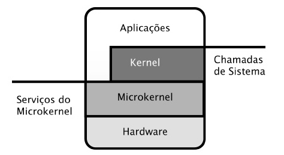

NFS - Network File System
No NFS pode-se montar um pedaço do sistema de arquivos distribuídos em algum diretório do sistema de arquivos local ao cliente, de modo que a nomenclatura dos diretórios provenientes do NFS segue o mesmo padrão do sistema de arquivos local. Portanto, o NFS provê transparência no acesso, pois se o servidor onde os dados se encontram mudar de lugar, o cliente não precisa saber dessa mudança para continuar a usar o NFS.
